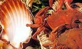
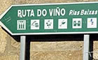

|
 |
 |
 |
| COUNTRY HOUSE |  |
LOCATION | |
CONTACT US | MONASTERY | GOLF | |
ROUTES | |
BEACHES | |
CELEBRATIONS | |
|
|
|
ROUTES: COUNCIL OF MEIS The municipality of Meis is located in one of the inner zones of the Valley of Salnés. As the main geographic reference we find the mount Castrove, which crowns the valley with a viewing point that offers an incomparable landscape: the Rías of Pontevedra, with the Peninsula of the Morrazo, Islands Cíes and Ons and Ría de Arosa, within the Island of Arosa, the Peninsula of El Grove and La Toja as well as the whole valley of Salnés. In this mount there exist two vestiges of the antiquity: of the Neolithic stage, dolmens as the one of Casiña da Moura; whereas of the Age of Bronze there exists a true treasure of the rock art in Outeiro do Cribo (Castrove), represented by petroglifos which date from the year 1000 b.c. and which represent labyrinths, deers, circles, men on horses and the most varied types of geometric games. The fact that many of these territories are unknown or unexplored invites to the most anxious to visit and discover origins and meanings. The following step is the Monastery of Santa María of Armenteira (S. XII), glory and jewel Romanesque during centuries of the monks of the Cister, Santa María of Armenteira was founded in 1167 by the monk Ero, according to the legend, who remained listening to the singing of a nightingale for two hundred years. This legend will be the one indeed to which the king Alfonso X the Wise dedicates his “cántiga”(ballad) number103. Despite what you could think Meis is not the shade of the Monastery of Armenteira, on the contrary, it serves to us as a guide to discover the different <churches> which fill the other parishes of the municipality. We must begin the visit by San Benito in Mosteiro, head of the capital of the municipality, which originally constituted the old Benedictine monastery founded on this community in the eleventh century. In the parish of San Martiño we can find the churches of San Martiño and San Salvador of Meis, both of the s. XII; in Paradela it stands out the church of Santa María, where you cannot avoid noticing its Romanesque apse, and in the parish of Santo Tomé the paintings inside the church already excel in a singular way. Finally we have to mention the churches of San Lorenzo and San Vicente, whose interiors are emphasized by the beauty of their stone altarpieces.  The
civil architecture has in Meis a great importance. The
natural richness and the abundance of constructive materials
culminate in the construction of Pazos like Quintáns,
Pompeán, Casal do Río, La Moroza or Señoráns. Who pleases of
magnificent houses, precious gardens, centennial forests,
intimate churches… should visit those Pazos, which are
witnesses of the social evolution of the Salnés. The
civil architecture has in Meis a great importance. The
natural richness and the abundance of constructive materials
culminate in the construction of Pazos like Quintáns,
Pompeán, Casal do Río, La Moroza or Señoráns. Who pleases of
magnificent houses, precious gardens, centennial forests,
intimate churches… should visit those Pazos, which are
witnesses of the social evolution of the Salnés.The popular architecture is also present. Something as pragmatic as a fluvial mill, needed in the primitive agricultural economy appears to us at present like a peculiar construction which attracts in a special way the attention of the tourist. Very well known are the mills of Arcos in Santo Tomé, but there also exist valuable examples in all the parishes of Meis. |
|
THE ROUTE OF THE GALICIAN SEAFOOD In these territories of sea and abundance of fish we must emphasize the seafood, attraction both for its inhabitants and foreigners and main part of any of the many gastronomic delights offered in the restaurants of these zones. The most important point of these festivities is the town O Grove which has been celebrating with unusual success the celebration of the Seafood for more than three decades. In this famous seaport we have to point out the geography of its streets, the peculiar statue dedicated to the fishermen and mainly the visit to the famous Island of La Toja recognized by its beneficial thermal waters. It is also fabulous and well known its huge beach of A Lanzada. Other elements of interest of this locality can be found in the old fortified “castro” (fortress) of A Siradella, the wonderful viewing point of Pedra Cabaleira, the necropolis of Adro Vello and the beach O Carreiro. From O Grove we will take the road which will lead us to the much frequented summery beaches of the localities of Portonovo and Sanxenxo. In the large council of Sanxenxo, apart from the typical “hórreos” and “cruceiros” we can emphasize a good set of religious buildings, perhaps the most important are the hermitage of Nuestra Señora de La Lanzada with origins in the century X and the church of San Esteban de Noalla with Romanesque origins. Others not less outstanding: the church of San Juan de Dorrón, with a beautiful baroque altarpiece, the ancient parochial church of Adina, the chapel do Santo, the parish of Bordóns. From this point we will go to the town of Combarro. In Combarro, town of agricultural and marine roots, we emphasize its “cruceiros”, signals of the paths or memories of penitents, its typical photography of granite stone houses decorated with rows of balconies and the stroll by its main street. Another element of the Galician singularity which appears in this town everywhere is its fantastic “hórreos”, typical barns used to mature, dry and keep the maize. In some places they are called “cabazos” or “cabaceiros” and they have as decorative elements in the vertexes of the ceiling a cross and the cone or pyramid that symbolize fertility. In the neighbourhoods we cannot miss the Monastery of Poio with its magnificent cloister of the Procesiones.  From Combarro we will take the route to Vilagarcía de Arousa. This medieval town is much visited in the summer, among its main monuments we have to point out the convent of Vista Alegre and “pazo” of the García de Caamaño, with its crenellated towers and chimneys, the church of Santa Baia de Arealonga. Among the civil buildings of interest we will emphasize the pazo of Golpelleira. At less than a kilometre from Vilagarcía we find the locality of Carril with its beautiful stroll and the near island of Cortegada, an idyllic forest of laurisilvas where we might rest our fates and taste the famous clams of the neighbouring town. At the return we can stop in Vilanova de Arousa and know the pazo de Cuadrante, native house of the writer Valle Inclán, and the Tower of the Monastery of Cálogo. From there, we will arrive in about 10 kilometres at Cambados. Cambados shows the title of “Very Noble Villa”. That nobility is appreciated in the centennial stones which compose its beautiful squares and pazos. Besides, it is the most well known zone to taste the most recognized wine of these parts: albariño. The first Sunday of August is dedicated to this wine and the town has a great celebration. Of its busy history we could learn of the successive waves of invaders either Celtics or Vikings which became memory and legend and also the defence which has been offered for more than ten centuries by the Tower of San Saturnino in the fishing district of Santo Tomé. But mainly this rich locality stands out for having in its geography exquisite examples of the most well known popular architecture of Galicia: the pazo. This way we find the most important one of Fefiñans of the century XVI, with its tower and wine cellar, in the gorgeous square of the same name and others not less interesting ones like the one of Bazán, nowadays Inn of Tourism, those of Ulloa, Torrado, Montesacro and Salgado. Of the religious architecture we should pay attention to the church of San Benito and the church of Santa Mariña. A civil building of interest which we cannot miss is the mill of Seca, for its ingenious structure which takes advantage of the force of the tides. ROUTE OF THE WINE This route constitutes the best option for the visitors who wish to get deeper into the culture of wine, and more concretely, in the albariño. This is one of the most developed cultural offer in O Salnés, the sub sector of the Denomination of Origin Rías Baixas, which includes the greatest surface of cultivation, production and number of wine cellars, and which is also the cradle of own albariño. The route of the wine Rías Baixas, pioneer in Spain for its organization and signaling, allows the tourist to visit several wine cellars of the region of very diverse character: familiar, cooperatives of great size, urban, historical, artisan… In all of them you can taste the wine, as well as their brandies, and know directly by mouth of the producers how the golden and delicate grape is turned into the delicious albariño which cheers palate and heart. The work of the grape growers of O Salnés (among them, the ones from Vilagarcía) have put the wine albariño at the top of the white wines in the world, making it deserve the innumerable awards in the fairs and most prestigious wine competitions. This reality can be known by means of a route which incluyes about thirty wine cellars of all the municipalities of the sub sector of O Salnés. ROUTE OF THE PAZOS  The
council of Vilagarcía has designed a route which allows to
know some of the most important pazos (country palaces) of
the region, belonging to the municipalities of Vilagarcía,
Ribadumia and Cambados. The
council of Vilagarcía has designed a route which allows to
know some of the most important pazos (country palaces) of
the region, belonging to the municipalities of Vilagarcía,
Ribadumia and Cambados.The route is made once a week, by a bus which leaves at ten in the morning from the Office of Tourism of O Cavadelo, where you can get the tickets. The prices are very reasonable. The route includes visits to the pazos of Vista Alegre, Rubiáns, O Casal (Lois-Ribadumia), Adega Martín Códax (Cambados), Monte Sacro (Cambados) and O Rial. Further information is provided at the Municipal Office of Tourism of Vilagarcía – Park of Cavadelo. Telephone number: 647 783 468 / Fax: 986 501 109. Email: tmo@ivilagarcia.com Winter timetable: Monday to Sunday from 10:00 to 14:00 and from 16:30 to 19:30. Summer timetable: Monday to Sunday from 10:00 to 14:00 and from 17:00 to 20:00. Sources:
|
| Country House | Location | Contact Us | Monastery | Golf Club | Routes | Beaches | Celebrations |